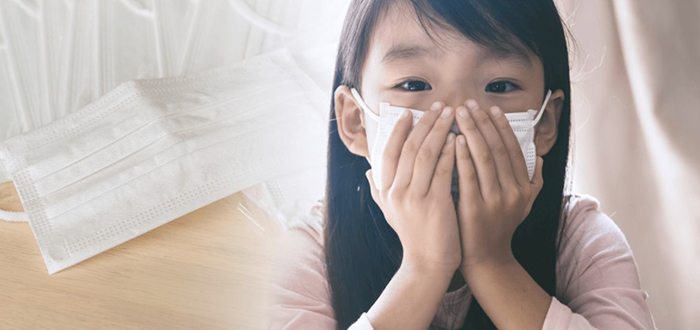
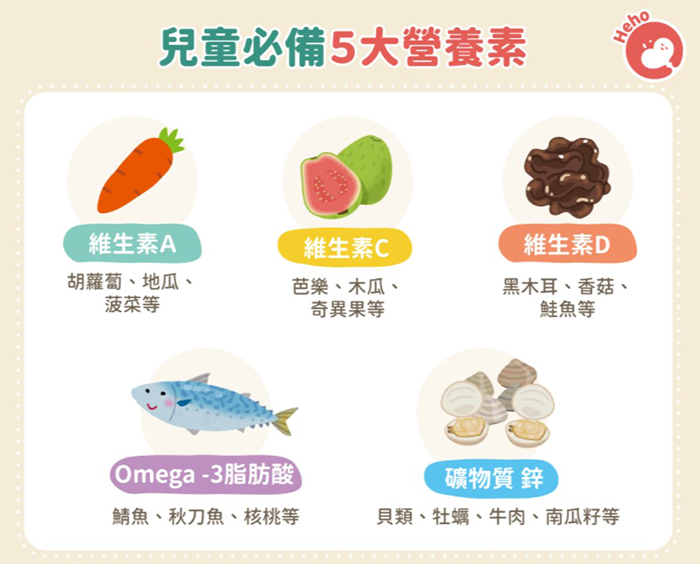

每月快訊
 月號－哺乳育嬰站
月號－哺乳育嬰站春節如何保護未接種疫苗的兒童？
國內疫情現況受到內外夾擊，大量海外人士返台過年入境篩檢陽性率高，桃機向外擴散的群聚事件也尚未平息，Omicron雖然看似重症率較低，持續延燒下仍會對醫療資源造成負擔，該怎麼保護尚未接種疫苗的兒童？請參考以下專業醫師及營養師之說明： 疫情變化迅速，林口長庚兒童急診科吳昌騰醫師在臉書中指出：「根據美國CDC的數據，Omicron 現在占美國COVID-19新病例的96.9%，在1月10日美國當日報告了146萬多例確診病例，再一次打破世界紀錄。」 然而不只是成人的感染，包含美國兒童確診病例也是呈「指數級」增長，遠遠超過過去大流行的高峰。截至1月6日的一週內，美國兒科醫學會報告超過580,000例兒童病例。比起上週報告的新增病例增加了78%，比前兩週增加了近3倍。 |
||||||||||||
|  | ||||||||||||
| 保護未接種疫苗的兒童！戴上口罩最重要 | ||||||||||||
對於尚未施打疫苗的兒童，吳昌騰建議：「最佳方法是讓他們戴上口罩，但前提是他們能夠戴得住口罩！」，關於戴口罩吳昌騰表示有幾個重點提醒大家一下： 1.美國CDC建議所有兩歲以上學童在室內都要戴口罩 另外疫苗接種是保護兒童免受COVID-19感染而住院的最佳工具，目前美國及歐盟等國已授權BNT及莫德納疫苗開放5-11歲兒童施打，美國約54%的12-17歲青少年及約16%的5-11歲兒童完全接種疫苗，目前台灣0-11歲以下小孩尚無疫苗，指揮中心預估2022年度下半年可望讓5至11歲兒童接種新冠疫苗。 除了配戴口罩及接種疫苗外，亦要加強幼兒的免疫力，以下為林孟瑜營養師之建議，以各種食材搭配來加強幼兒攝取5種營養素。
|
||||||||||||
|  | ||||||||||||
| 資料來源 1.COVID-19／Omicron有三大威脅！春節如何保護未接種疫苗的兒童？ - Heho健康 2.COVID-19／兒童未打疫苗憂成高危險族群！營養師提點必備 5 營養素 - Heho健康 |